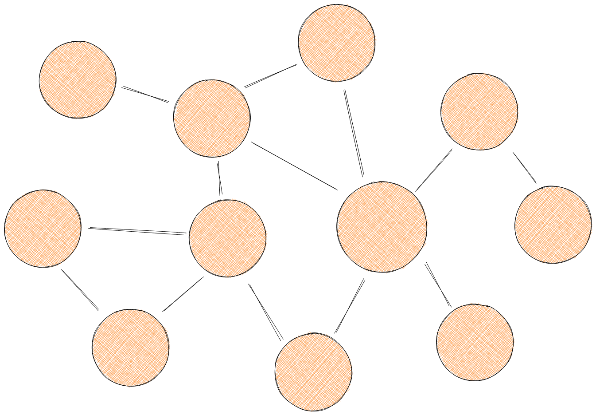
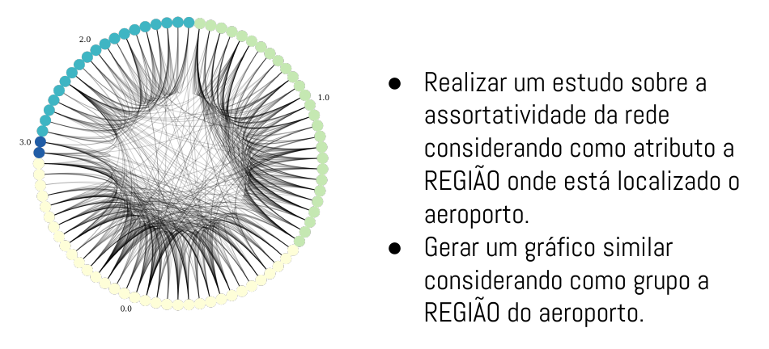
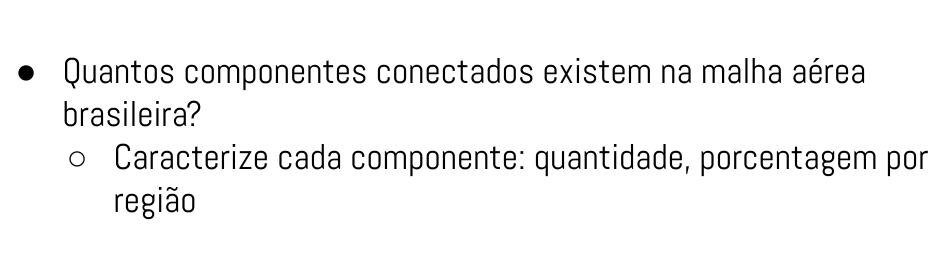
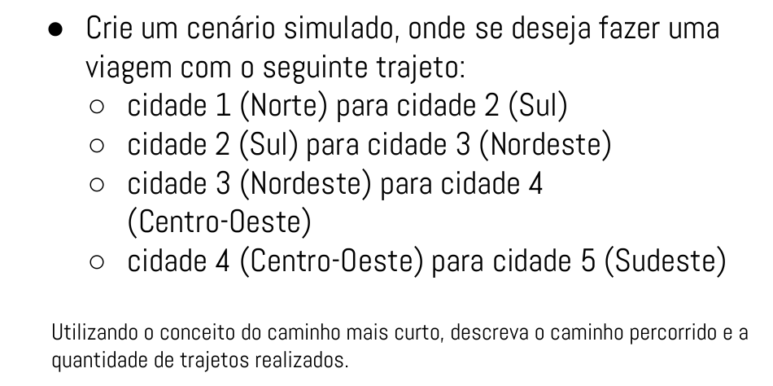
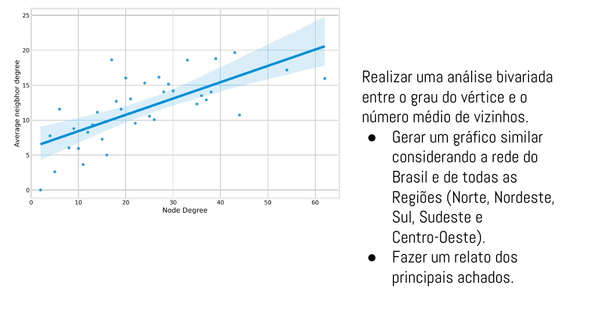

Aeroportos e Voos Brasileiros
- Disciplina: IMD1155 - Network Analysis
- Professor: Ivanovitch Silva
- Ano Letivo: 2021.2
- Autor: Rafael Bezerra da Escóssia Araújo

Contextualização
De acordo com Michele Coscia, no livro "The Atlas for the Aspiring Network Analysis", a ciência da análise de redes é a procura da compreensão da forma de um sistema complexo através da inspeção das relações entre seus componentes de interação. Nos dias de hoje, essa ciência está muito relacionada ao entendimento das interações nas redes sociais, mas não só nessa área atua a ciência. Se abstrairmos um pouco, veremos que o nosso cotidiano está cercado de redes. Por exemplo:
- Elementos químicos são átomos interagindo uns com os outros;
- Máquinas são formadas por componentes que se relacionam;
- Uma área do conhecimento pode ser subdividida em várias matérias que podem se relacionar com outras matérias.
Enfim, acima foram citadas apenas alguns exemplos de muitos. Nesse trabalho, buscaremos a compreensão do funcionamento e forma da interação entre aeroportos Brasileiros e seus voos domésticos. Os dados foram coletados do repositório de Álvaro F.P.P .
Foram utilizados os arquivos "data/airports.csv" e "data/air_traffic.graphml". No primeiro estão contidos os dados relativos aos aeroportos, como estado e região (informações necessárias para esse projeto), e, no segundo, consta os relacionamentos entre os aeroportos, além de alguns atributos.
Compreensão, Estruturação e Limpeza dos Dados
Antes de iniciar de fato na análise exploratória dos dados e realizar as entregas das atividades, é importante ter a compreensão dos dados que estamos lidando. Portanto, nessa etapa, gastaremos nossos esforços para entender os dados, limpá-los e estruturá-los, de forma que tenhamos ao final, os dados prontos para serem analisados nas etapas posteriores.
Acompanhe os passos dessa etapa no notebook:
- "00. Compreensão, estruturação e limpeza do dataset.ipynb"

Atividades
1.

2.

3.

4.
